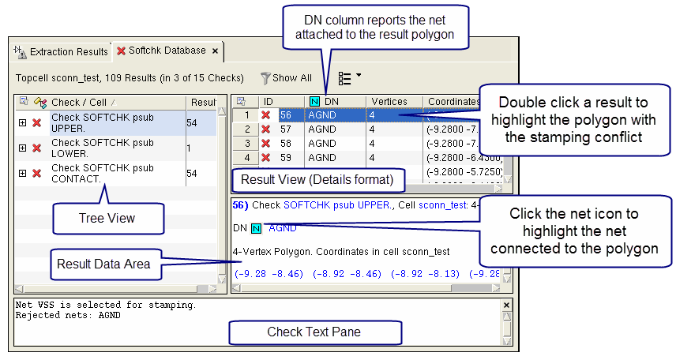

You can debug
soft connection errors reported in an LVS Softchk database using
features in Calibre RVE. The LVS Softchk database is displayed in
a DRC-style report tab with many highlighting and cross-probing
features from Calibre RVE for LVS available in menu and right-click
selections.
For additional information about debugging
soft connections errors, see the Sconnect statement
in the Standard Verification Rule Format Manual and
“Detection of Soft Connections” in the Calibre Verification User’s
Manual.
Prerequisites
An
SVDB containing an LVS Softchk results database.
See “Rule File Requirements for Examining Results with Calibre RVE for LVS”.
The rule file for the example
shown in the following procedure includes the following statements:
LVS SOFTCHK psub CONTACT
LVS SOFTCHK psub LOWER
LVS SOFTCHK psub UPPER
The LOWER keyword is the default
for LVS Softchk if not specified. Appropriate Sconnect statements
are also included.
The
layout database analyzed in the run.
A
layout viewer with an interface to Calibre RVE. See “Connection to a Design Tool”.
Procedure
- Open your layout in Calibre
DESIGNrev or in another supported layout viewer.
- Start Calibre RVE from your
layout viewer, as described in “Starting Calibre RVE”, and open your SVDB.
If there are soft connection
errors such as stamping conflicts, the Extraction Results tab
with stamping conflict warnings is automatically displayed. Detailed
information on stamping conflicts is included if LVS Report Option
S is specified in the rule file.
The opening view should be
similar to the following image:
- Open the Softchk database
by clicking “Softchk Database” in the Navigator tab
or choosing View > ERC > Softchk
Database.
The Softchk database is displayed
in a DRC-style results tab.
- (Optional) Specify the following
options to duplicate the views shown in the following figures:
- Choose View > Result Options > Details.
- Enable View > Result Options > Result Data.
- Enable View > Result Options > Results IDs.
- Enable View > Check Text Pane.
- Click the Setup Highlight color scheme icon
and choose “Default
colors” from the dropdown list.
- Select a SOFTCHK check in
the tree view, then an individual result in the details view. This
displays details about the result in the results data area and the check
text pane. The view in Calibre RVE looks similar to that shown in Figure 1.
The DN column in the Result
View reports the net attached to the result polygon. The interpretation
of the result polygon and attached net differ depending on the keyword
used in the LVS Softchk statement, as described in Table 1.
Table 1. DN Column and Result Polygons for LVS
Softchk DatabaseLVS Softchk Keyword
|
Result Polygon
|
DN Column
|
|---|
LOWER
|
Polygon on lower level
layer.
|
Net attached to lower
level polygon, which is from the successful Sconnect operation.
|
CONTACT
|
Rejected polygon on contact layer.
|
Rejected net attached
to contact layer result polygon.
|
UPPER
|
Rejected polygon on upper layer.
|
Rejected net attached
to upper layer result polygon.
|
Figure 1. LVS Softchk Results
Tab in Calibre RVE
- Perform the following steps
to highlight the polygons and rejected net associated with the stamping
conflict. Highlighting lower level layers first improves the visibility
of the highlights.
- Select the SOFTCHK with the
LOWER keyword in the tree view, then double-click a result in the
result listing to highlight it, or use the icon.
This highlights the lower level polygon involved in the stamping
conflict.
You can also highlight the
net attached to the lower level polygon. In this example, net VSS
is attached to the lower level polygon and is not highlighted.
- (Optional) Select the SOFTCHK
with the CONTACT keyword in the tree view, then select an individual
result and highlight it. This highlights the contact polygon involved
in the stamping conflict.
- Select the SOFTCHK with the
UPPER keyword in the tree view, then select an individual result.
Click the net icon () in
the Result Data Area to highlight the rejected net. The rejected
net is the one Calibre did not select
to participate in the Sconnect connection.
- Still for the SOFTCHK with
the UPPER keyword, double-click the result in the result listing
to highlight it, or use the icon.
This highlights the rejected polygon.
The resulting view is similar
to that in the following figure:
Viewing the polygons involved
in the stamping conflict along with the rejected net can assist
you in resolving the problem.
- (Optional) You can use additional
highlight options to further debug the soft connection error. The
following figure shows these additional menu and right-click selections.